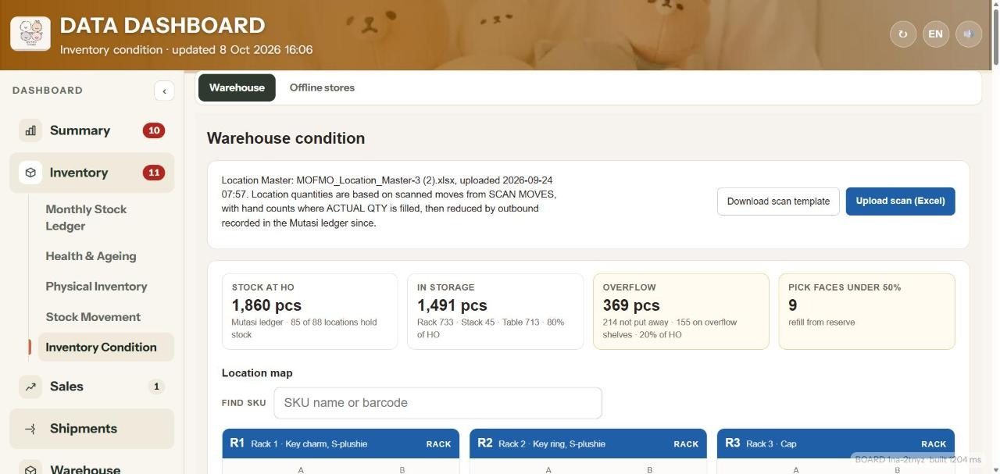
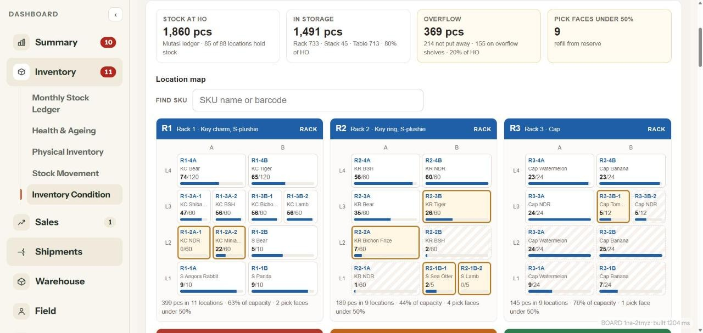
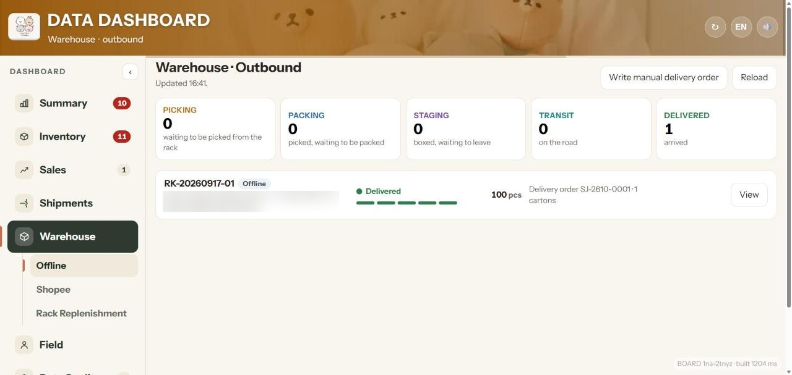
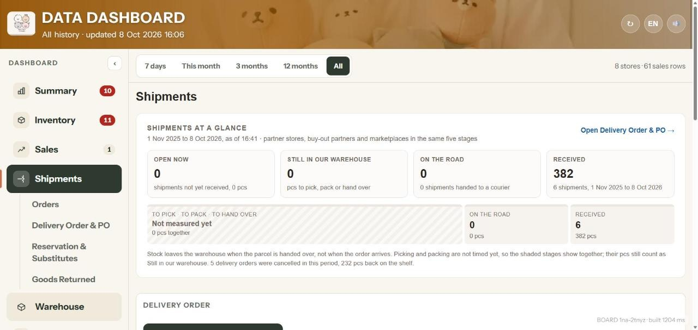
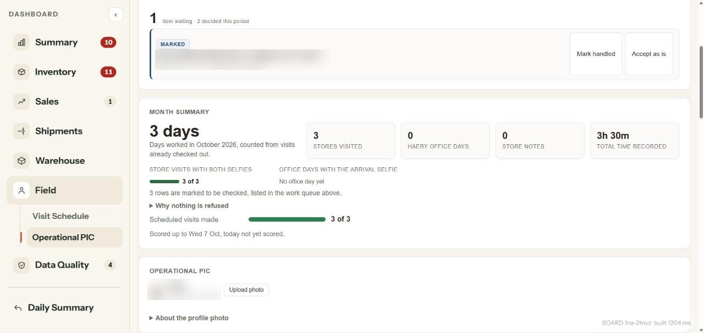
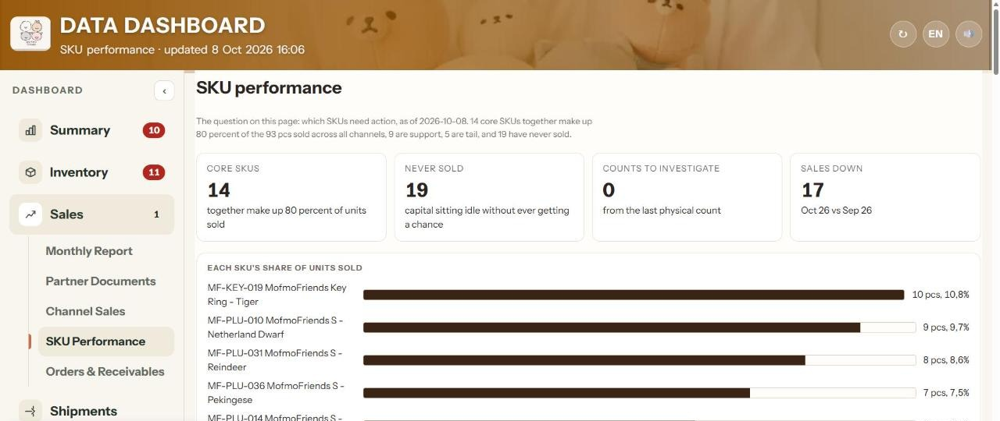
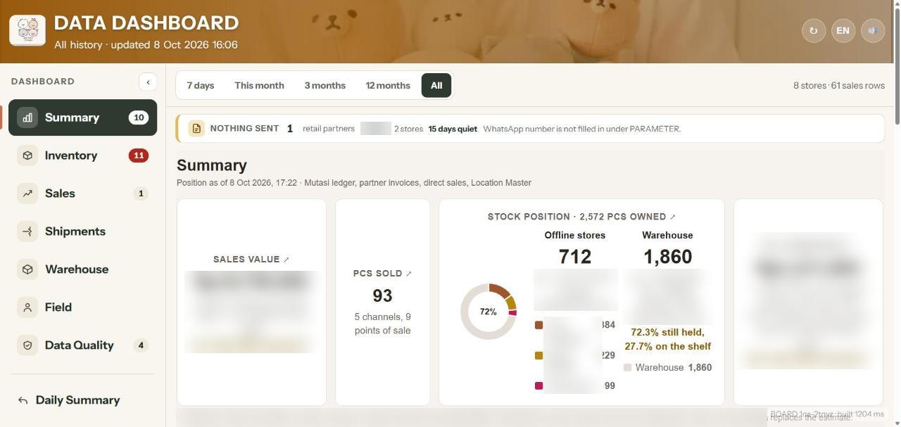
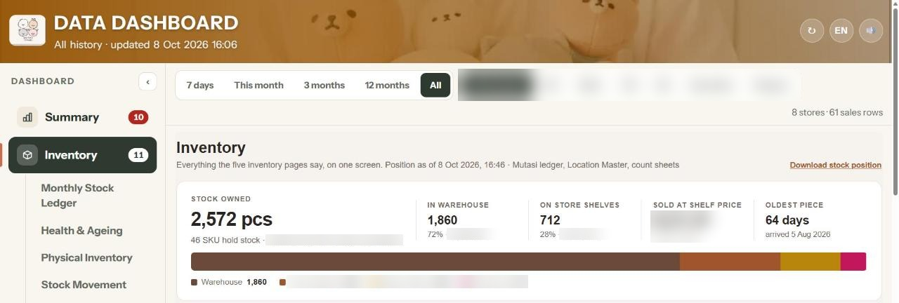
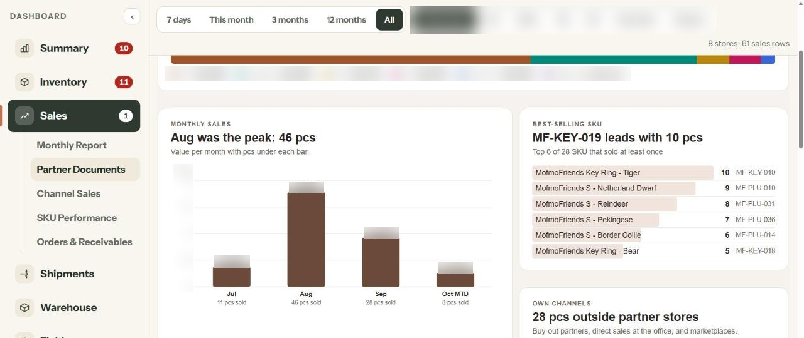

1INBOUND
Every carton gets a slot
The principal's PO lands in X-IN. Each carton is scanned into a rack location, and anything not put away stays visible as overflow.

A plush toy brand sold through 8 stores of 3 retailers, and its stock lived in five files that never talked to each other. I connected warehouse, shipments, field visits and sell-out into one system on Google Sheets and Apps Script, as the operations lead, with AI writing the code.
The stock count on 14 August gave three different totals for the same warehouse. Every number was typed again by hand, deliveries to stores had no proof, field visits could not be checked, and partner reports arrived as PDF or Excel in a different shape each time. So the ask was simple: connect it all.
The principal's PO lands in X-IN. Each carton is scanned into a rack location, and anything not put away stays visible as overflow.

A live map of racks, tables and stacks with fill levels. Quantity per rack has to match HO stock, and every count correction is logged with who, when and why.

Pickers scan the slot first, then the SKU. A delivery order cannot be issued when the store requires a PO number and none is entered.

Every shipment moves through five stages and only closes when the store confirms it arrived, so a stalled parcel shows up the same day.

Store staff use a phone app that writes to the same ledger.

Partner sales reports in PDF or Excel are read into ledger rows, so sell-out per store and SKU is visible, including the SKUs that never sold.




The data model and the business rules that must never break are mine. A few of them:
I describe the behaviour and the rule, AI writes the Apps Script, and every change gets a test that is first shown to fail before the fix goes in. I deploy and run production functions myself.
No new licence and no IT team. One movement ledger is the source for every number on the board.